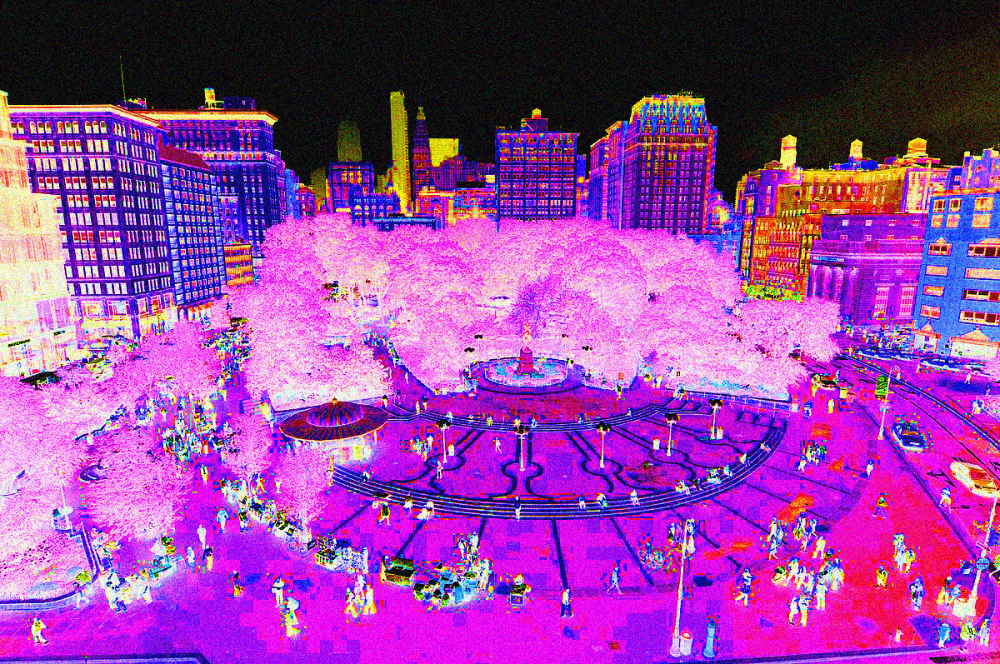
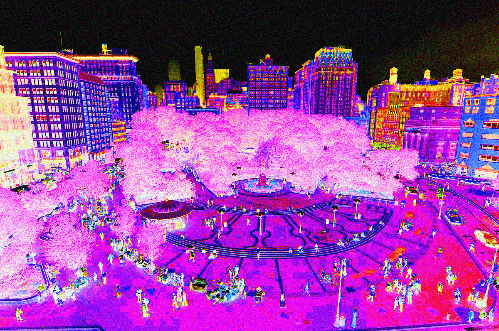

Sensory details - Sidewalks/Streets
When I walk to class - I’m often met with sights of buildings, people, and many intricate details that define the lower area of Manhattan, specifically Union Square. I’m familiar with Union Square quite a bit because of its proximity to my university, Parsons The New School. I find Union Square to be overstimulating at times due to the amount of people in the area. At times, there is a lot going on, which introduces an environment filled with senses. Union Square itself is surrounded by streets and stop lights. There are people walking in every direction constantly, crossing the streets. The denser population means more diversity in every aspect for every person. People play a major role in this environment as many commute to the large subway station here or live nearby. Union Square is also surrounded by tall buildings, further establishing it as a staple within the city.
The Union Square greenmarket also which happens throughout the week offers even more sensory experiences, specifically relating to what’s being sold. There are many vegetables, fruits, art, clothing, and other items that are set up in stands throughout. This brightens up the area, energetically and makes it feel more community based than it already is. The colors are brighter, the conversations are louder, the sounds are closer, the smells are stronger, and touch varies even more.